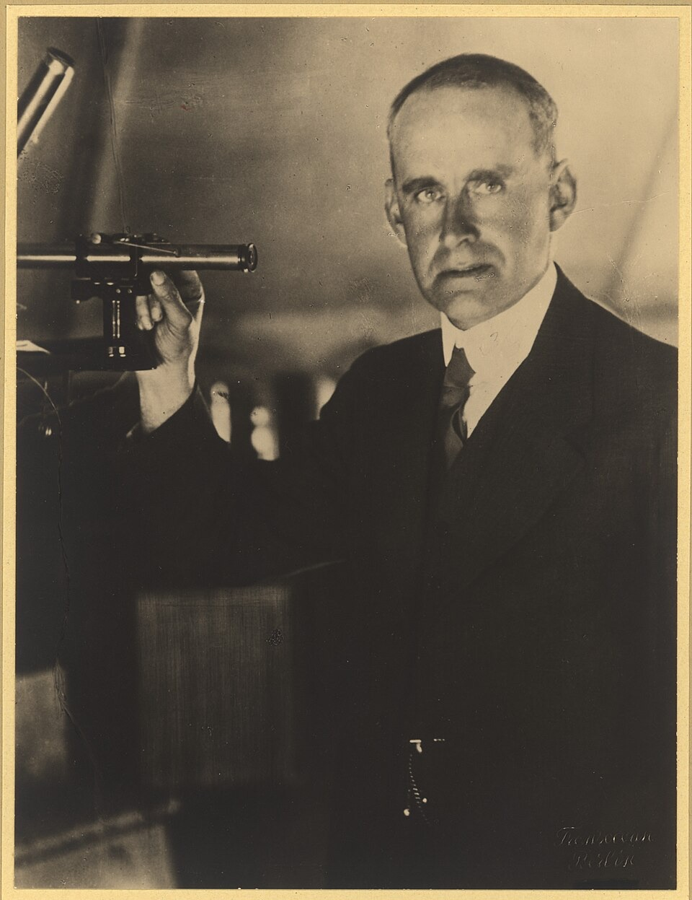

- The Sun has shone for thousands of millions of years. No chemical fuel, and no slow shrinking under gravity, could last so long
- Four hydrogen nuclei have slightly more mass than one helium nucleus
- Eddington proposed that the Sun is powered by fusing hydrogen into helium, and built the physics of stars on the idea in his book of 1926
- Fusion had not yet been seen in any laboratory
A star explained from a table of atomic masses and \(E = mc^{2}\).